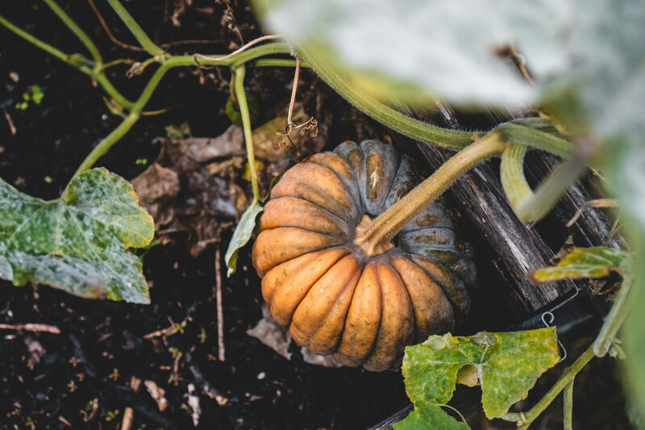

A survival garden isn't about growing everything. It's about growing the right things — crops that feed you reliably, store well, and don't demand special equipment or constant attention. The plants below have kept people fed for centuries without greenhouses, seed trays, or grow lights.

1. Beans (bush and pole)
Beans are protein you can grow in dirt. They're high in protein, easy to dry and store for years, and they actively improve your soil by fixing nitrogen — the plants feed the ground while they feed you. Bush beans need no support. Pole beans need something to climb but produce more per square foot.
Push seeds an inch into warm soil after your last frost. Space them four inches apart. Water. They come up fast, and within two months you're harvesting. For dry beans that'll sit in a jar on your shelf for years, leave the pods on the plant until they rattle when you shake them.
2. Potatoes
Potatoes produce more calories per square foot than almost any other crop. A ten-by-ten foot plot can yield fifty to a hundred pounds. They store for months in a cool, dark place — no canning, no freezing, just a cardboard box in the basement.
Buy seed potatoes (not grocery store potatoes — those are often treated with sprout inhibitors). Cut them into chunks with two or three eyes each. Bury four inches deep, twelve inches apart. As the green tops grow, mound soil around the stems — this is called hilling, and it's where the new potatoes form. When the tops yellow and die back, dig them up.
3. Winter squash
One butternut squash plant can produce five to ten squash. They store for months at room temperature — no refrigeration, no processing, just a shelf in the pantry. Dense, sweet, and versatile: soups, roasting, pies, bread.
Plant seeds in small hills — three or four seeds per hill — after frost danger passes. Thin to the strongest two plants. Give them room because they sprawl. Harvest when the skin is hard enough that your fingernail can't dent it and the stem is dry and corky.
4. Zucchini
The most reliable producer in any garden. Two plants will keep a family in squash all summer. It's fast, easy, and nearly impossible to kill. You will give some away — this is not a warning, it's a promise.
Plant seeds directly in warm soil after frost. Give each plant about two feet of space. Pick them small — six to eight inches — for the best texture. If you miss one for a day or two, it becomes a baseball bat overnight. That's fine. Grate it for bread.
5. Garlic
The lowest-effort crop in existence. You put a clove in the ground in fall, mulch it, and come back in summer to harvest. That's it. It stores for months and every kitchen uses it constantly.
Break apart a head of garlic. Plant individual cloves pointy-side-up, two inches deep, six inches apart. Do this in fall — about four to six weeks before the ground freezes. Cover with a thick layer of straw or leaves. Harvest when the lower leaves turn brown. Hang to cure in a dry, airy spot for two to three weeks, then store in a cool, dark place.
The one thing that makes everything easier
Mulch. Straw, grass clippings, shredded leaves, even cardboard — cover any bare soil around your plants. Mulch holds moisture so you water less. It smothers weeds so you barely have to pull any. And as it breaks down, it feeds the soil. This is the closest thing gardening has to a cheat code.
The full Survival Garden Basics guide covers twelve easy crops with detailed planting and harvesting instructions, four perennial crops that come back year after year (asparagus, strawberries, herbs, rhubarb), a cool vs. warm season planting guide, storage instructions for every crop, a tear-out quick reference card, and garden journal pages to track what worked.
Survival Garden Basics on Etsy →